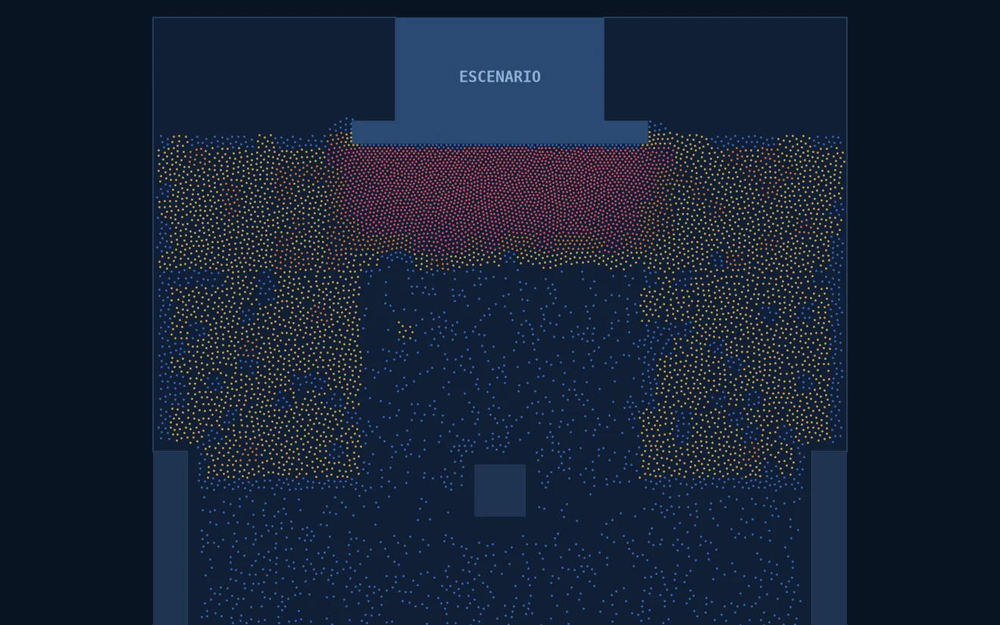
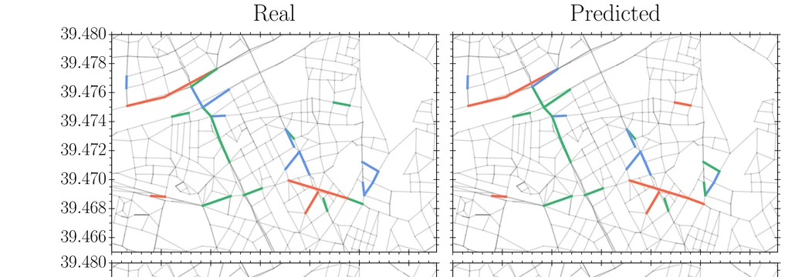
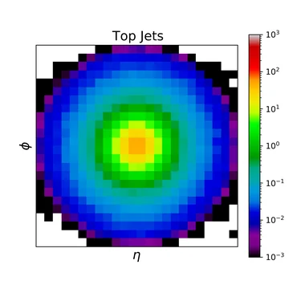
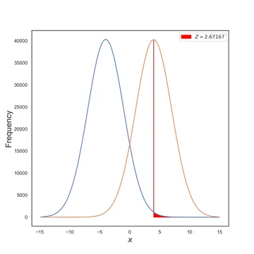
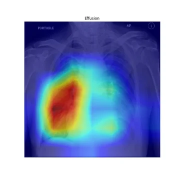

LLMs, assistants and agents
Generative AI built on your own knowledge, documents and processes.
- Assistants over internal documents
- Retrieval with cited sources (RAG)
- Adaptation to your sector's terminology
- Agents connected to tools and data
We build AI systems for companies in regulated sectors, defence and health: forecasts with their uncertainty, answers that cite their source, and human oversight at every step.
We were born at the Universitat de València to bring companies AI methods that have already passed the test of research: models that know how wrong they might be and explain where each answer comes from.
We design systems adapted to each client's domain, data and operating conditions, and check that they are feasible, useful and governable before scaling.
AI development
Generative AI built on your own knowledge, documents and processes.
Models that anticipate how a system behaves and say how far to trust them.
Detection of rare events, operational deviations and early signals.
Text, images, signals, sensors and scientific data, combined when one source is not enough.
Adopt, validate and deploy
A fixed-scope service to decide what is worth building: prioritised use cases, an assessment of data and risks, and a roadmap or a pilot definition.
Evaluation and benchmarks, traceability and risk documentation, human oversight, drift detection, and support for frameworks such as ISO/IEC 42001 and the EU AI Act.
We work with organisations that cannot afford an AI that is wrong without warning, or an answer that cannot be justified.
Assistants that read regulation and turn it into obligations and deadlines, each linked to the article it comes from. Readiness for the EU AI Act.
Demo on Regulation (EU) 2024/1689 and Spain's plant protection register, below.
Discuss your case →Anomaly detection in sensors and communications, fusion of data from several sources, and models that state their uncertainty, always with a person in charge of the decision.
Published methods for anomaly and rare-event detection.
Discuss your case →Machine learning on medical images, instruments and sensors: event selection, reconstruction, image quality and explainable diagnostic support.
Projects under way. Papers on Compton camera imaging (2025) and chest X-rays (2020).
Discuss your case →Forecasts with their uncertainty, early warnings and crowd simulation to plan events and evacuations before they happen.
Aforia, traffic alerts validated on València data, and geomagnetic storm forecasting (Space Weather, 2023).
Discuss your case →Two demonstrations built on real regulation and on the real geometry of València. They are not finished products: they show how we work.
Every claim links to the article or official register it came from, and to the date of that data. It marks whether an obligation already applies, will apply on a set date, or is still only a bill. And when a question needs human judgement, it stops. This is a demonstration, not an advisory service.
Answers computed in advance from Regulation (EU) 2024/1689 as consolidated on 27 July 2026, the Spanish Official Gazette (BOE) and the official register of Spain's Ministry of Agriculture (MAPA). None has been validated by an expert yet, and the demonstration says so.

Aforia simulates every person on the real plan of a space and shows where dangerous crowding will form, how long it will take to clear, and which measures work: street closures, warnings to the public, front-of-stage pens or wider exits.
Figures from simulation, with a model not yet calibrated against real events. The demos are in Spanish.
Each step is agreed only once the previous one has produced results.
A fixed-scope engagement that answers one question: can this problem be solved with AI, on your data, to a standard you could actually deploy? You get a written answer: what is feasible, what it would take, what could go wrong, and whether it is worth building.
Scope and price agreed before we start. If the answer is no, you get that in writing too.
Request an assessmentPractical programmes for public, private and scientific organisations, adapted to each team's level and real processes. We combine conceptual understanding, guided practice and application to real cases, with attention to human oversight, verification and the protection of sensitive information.
In person, online or hybrid · in Spanish or English · cases and exercises adapted to the client's sector, technical level and documents.
Looking for training for your team? We'll prepare a tailored proposal.
Request a training proposalOur scientific direction rests on published, peer-reviewed research in AI, complex systems and physics.




Physicist from the Universitat de València with an MBA from Universidad Nebrija. He has structured complex technical initiatives, competitive proposals and partnerships across research, technology and innovation. At INFERA Labs he turns advanced technical capabilities into viable projects and deployment paths.
Full Professor of Theoretical Physics at the Universitat de València and researcher at IFIC (UV–CSIC). She combines scientific modelling, data analysis and AI. At INFERA Labs she leads the science behind specialised AI, predictive intelligence, anomaly detection and decision support.
A custom build, a feasibility assessment or training for your team: tell us what you need and we will reply personally.